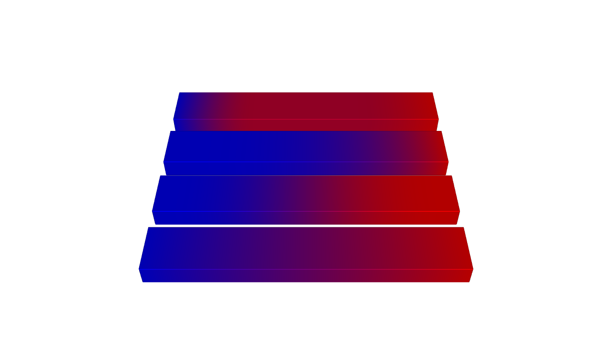
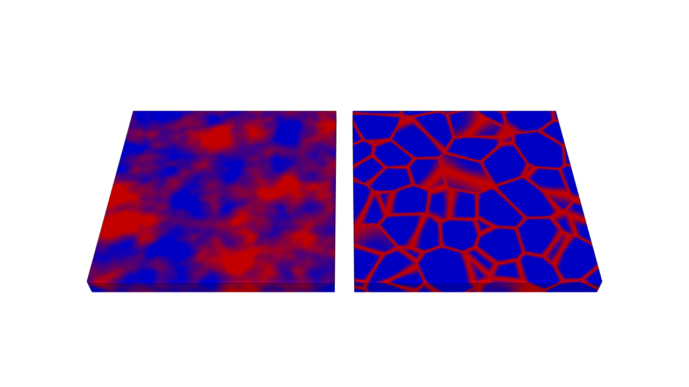
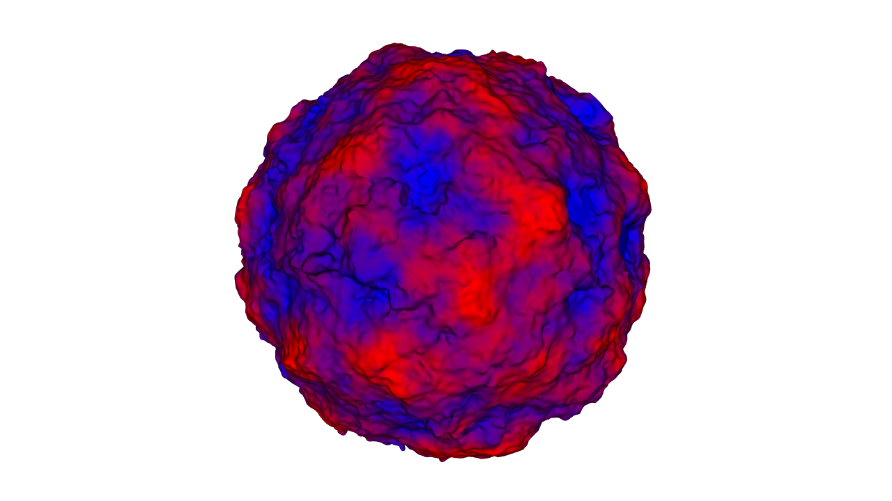
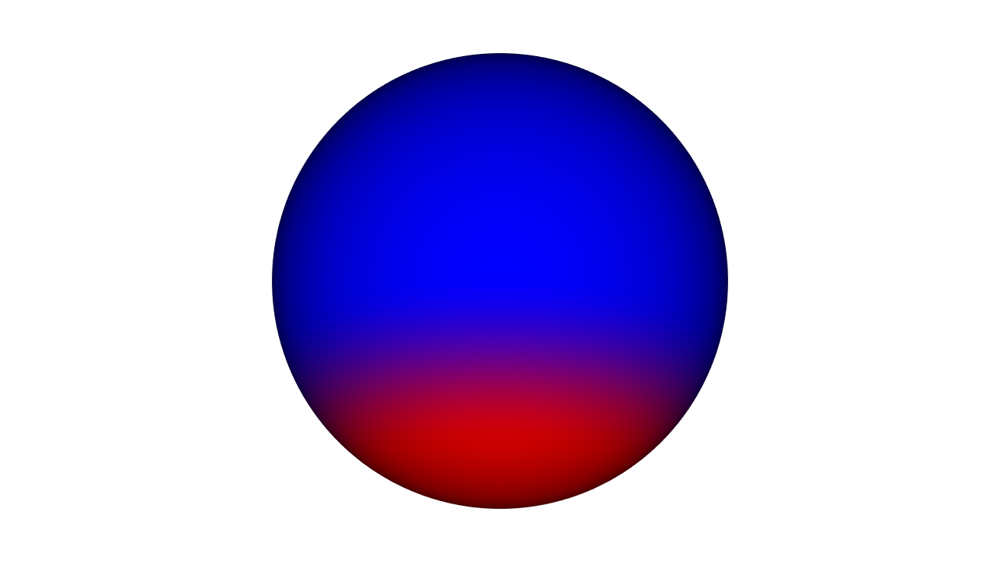
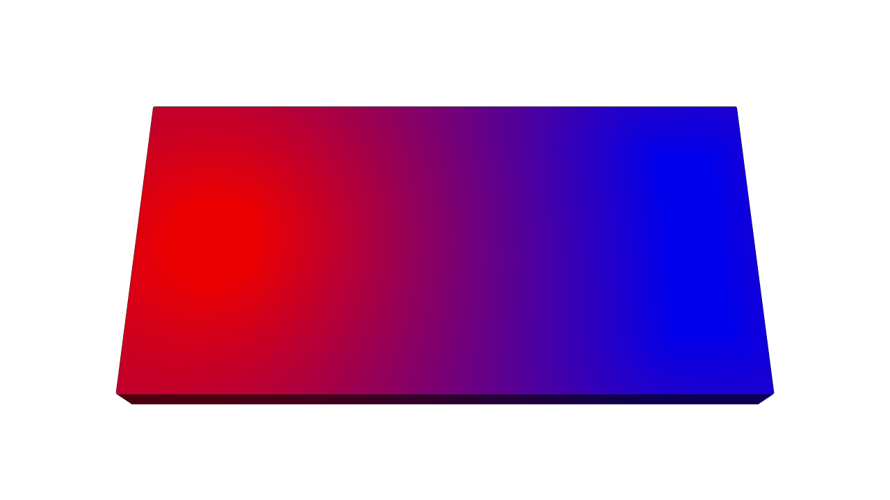
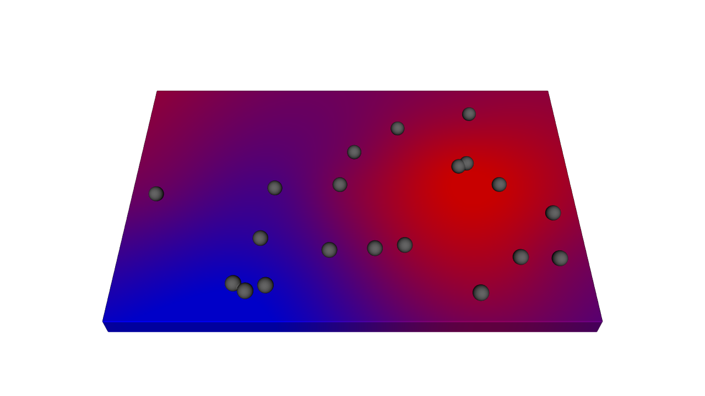
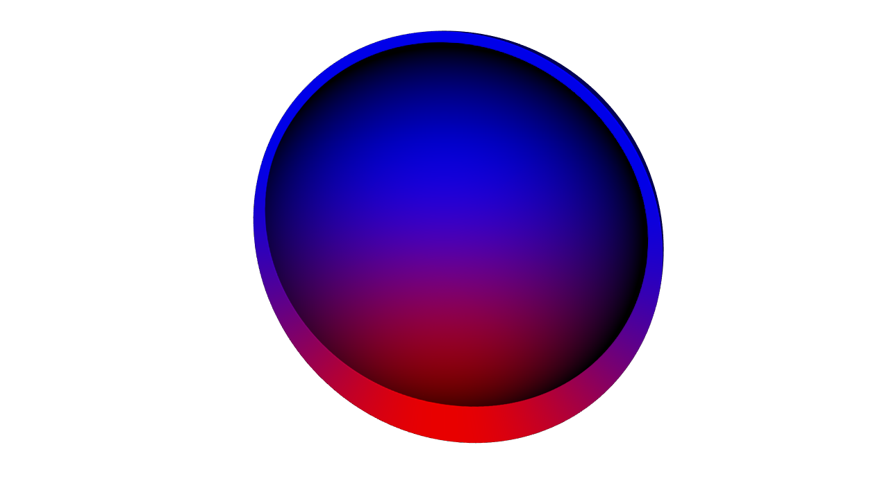
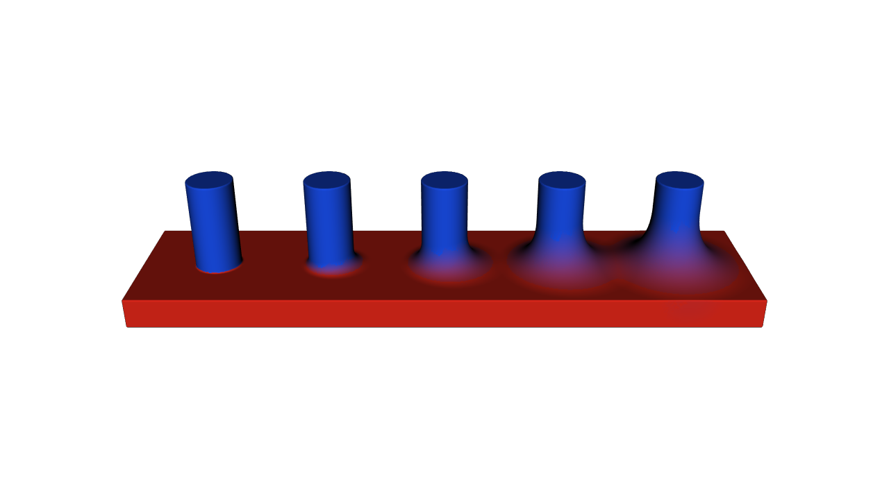
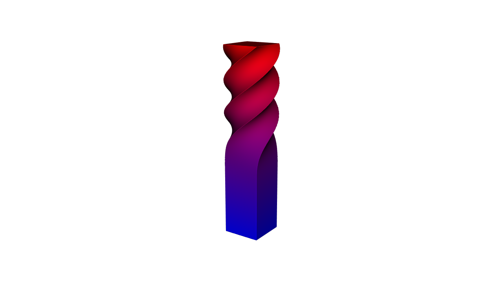

Fields: Driving Material and Geometry#
A field is a value that changes from point to point: a temperature, a stiffness, a wall thickness. In OpenVCAD a field is an attribute, the same kind of object you met in Getting Started. That means one field can do two jobs. Set it on a part and it grades the part’s material. Pass it to a tool that takes a size, such as an offset or a shell, and it shapes the geometry. This guide shows the new kinds of fields and how to use each one for both.
What You Will Learn#
In this guide you will learn how to:
Shape a field with easing curves and transfer curves.
Add organic variation with noise.
Grade by how a surface faces a direction, for example the build direction.
Grade between two bodies, whatever their shapes.
Turn scattered measurements into a field.
Use the same fields to drive an offset, a shell thickness, a blend radius and a twist.
Prerequisites#
This guide assumes you have completed the Getting Started Guide, in particular Lessons 4–6 (attributes and volume fractions), and the Functional Grading Guide. For fields written as Python functions, see Numba Attributes.
Lessons 3 and 7–9 pass fields to tools that change geometry. Those tools are introduced in Offsets, Blends and Arrays and Deforming Space; you only need to know that they accept a field wherever they take a size.
Running the Examples#
The scripts are in examples/fields/. Run any script directly:
cd examples/fields
python 01_shaping.py
Each script ends with viz.Render(root) or viz.Render(root, materials), which opens the interactive OpenVCAD preview window. Close the window to end the script.
Note: To see an attribute such as volume fractions in colour, pick it from the Attribute list at the top of the render window (also under Render -> Attribute). Each lesson says which one to pick.
Fields at a glance#
Every field in this guide is a pv.FloatAttribute (one number per point) or a pv.Vec3Attribute (three numbers per point), the same attributes you used in Getting Started. Working with fields always takes three steps: make a field, change it until it has the shape you want, then use it.
Step |
Python |
Lesson |
|---|---|---|
Make: from an expression or a function |
|
Gradients guide |
Make: noise |
|
2, 3 |
Make: from other parts |
|
4, 5 |
Make: from measurements |
|
6 |
Change |
|
1 |
Use for material |
|
all |
Use for geometry |
|
3, 7–9 |
Each change gives you a new field and leaves the original as it was, so you can shape one field several ways (Lesson 1 does). pv.VolumeFractionsAttribute takes a field anywhere it takes an expression string, so [(weight, red), (1.0 - weight, blue)] grades from blue to red as weight runs from 0 to 1.
Note: You may also meet converters (
pv.AttributeModifier, see the Attribute Resolver guide). They are a separate, later step: they turn the finished values of a whole design into what a printer needs, for example stiffness into material mixes. Shape your fields with the tools in this guide, and use converters only for that last step.
Lesson 1: Shaping a field#
Most fields start as a straight ramp. In the example, pv.FloatAttribute("x").normalize(-30.0, 30.0) is a ramp that is 0 at x = −30 and rises evenly to 1 at x = +30 (normalize rescales a field so the two numbers you give become 0 and 1). Two methods bend that ramp into the profile you want:
field.ease(curve)clamps the field to the range 0 to 1 and passes it through an easing curve."smoothstep"and"smootherstep"start and end gently;"power"with an exponent above 1 starts slowly;"sine"and"exponential"give other profiles. The result always stays between 0 and 1.field.transfer(points)maps the field through a transfer curve that you draw with control points(input, output). Between points the curve is straight, or smooth withinterpolation="smooth". A smooth curve never overshoots: between two points it stays between their values. Past the last point it holds the last value.
The example shades four bars with the same ramp, shaped four ways.
import pyvcad as pv
import pyvcad_rendering as viz
materials = pv.default_materials
red = materials.id("red")
blue = materials.id("blue")
# One ramp along x: 0 at x = -30 and 1 at x = +30.
ramp = pv.FloatAttribute("x").normalize(-30.0, 30.0)
# Four shapes of the same ramp, one per bar (front to back):
# linear, smootherstep (flat at both ends), power 3 (starts slowly),
# and a smooth transfer curve that rises quickly and then holds a plateau.
weights = [
ramp.ease("linear"),
ramp.ease("smootherstep"),
ramp.ease("power", 3.0),
ramp.transfer([(0.0, 0.0), (0.3, 0.8), (0.7, 0.8), (1.0, 1.0)], interpolation="smooth"),
]
bars = pv.Union()
for row, weight in enumerate(weights):
bar = pv.RectPrism(pv.Vec3(0, 14 * row, 0), pv.Vec3(60, 10, 4))
# The shaped field is the red fraction; the rest of the bar is blue.
bar.set_attribute(pv.DefaultAttributes.VOLUME_FRACTIONS,
pv.VolumeFractionsAttribute([(weight, red), (1.0 - weight, blue)]))
bars.add_child(bar)
viz.Render(bars, materials)
Render (volume_fractions)

Pick volume_fractions in the viewer. Each bar runs from blue at the left (x = −30) to red at the right (x = +30). From front to back: the linear ramp changes evenly; smootherstep stays blue and red longer at the ends; power 3 stays blue for most of the bar and turns red late; the transfer curve rises quickly to a mostly-red plateau and only finishes at the very end.
Use transfer for any material law that isn’t a straight line, for example density to stiffness: density.transfer([(0.0, 1.0), (0.5, 2.0), (1.0, 9.0)], interpolation="smooth").
Lesson 2: Noise#
Noise adds variation that looks natural instead of regular: mottled colour, bumpy skin, random cells. pv.FloatAttribute.noise(type, seed, frequency, octaves) gives two kinds:
"simplex": smooth blobs. Its values run from −1 to 1."cellular_f1","cellular_f2"and"cellular_f2_minus_f1": random cells.cellular_f2_minus_f1is 0 on the walls between cells, so a low threshold traces a web of walls.
frequency sets the feature size: 0.1 gives features about 10 mm across. octaves adds finer layers of detail on top, each at twice the frequency and half the weight. seed picks one random pattern; the same seed always gives the same pattern, on every computer.
import pyvcad as pv
import pyvcad_rendering as viz
materials = pv.default_materials
red = materials.id("red")
blue = materials.id("blue")
# Simplex noise with three octaves: smooth blobs with finer detail on top, in [-1, 1].
blobs = pv.FloatAttribute.noise("simplex", seed=4, frequency=0.06, octaves=3)
# Cellular F2 - F1 noise: 0 on the walls between random cells, so a low threshold traces a web.
cells = pv.FloatAttribute.noise("cellular_f2_minus_f1", seed=4, frequency=0.12)
# Left plate: the blobs mapped to a red fraction between 0 and 1.
left = pv.RectPrism(pv.Vec3(-27, 0, 0), pv.Vec3(50, 50, 4))
blob_red = blobs.map_range(-0.4, 0.4, 0.0, 1.0, clamp=True)
left.set_attribute(pv.DefaultAttributes.VOLUME_FRACTIONS,
pv.VolumeFractionsAttribute([(blob_red, red), (1.0 - blob_red, blue)]))
# Right plate: red walls where F2 - F1 is small, blue cell interiors, eased for a soft edge.
right = pv.RectPrism(pv.Vec3(27, 0, 0), pv.Vec3(50, 50, 4))
wall_blue = cells.normalize(0.0, 0.15).ease("smoothstep")
right.set_attribute(pv.DefaultAttributes.VOLUME_FRACTIONS,
pv.VolumeFractionsAttribute([(1.0 - wall_blue, red), (wall_blue, blue)]))
viz.Render(pv.Union(left, right), materials)
Render (volume_fractions)

The left plate is mottled by simplex noise with three octaves. The right plate shows cellular noise: blue cells with red walls. The cells are 3D, so where a wall runs nearly parallel to the top face it shows as a wide red patch.
Noise values seldom reach the ends of their range, so map the middle of the range and clamp, as map_range(-0.4, 0.4, 0.0, 1.0, clamp=True) does here, for strong contrast.
Lesson 3: A field that shapes geometry#
A tool that takes a size, such as pv.Offset(distance, part), also takes a field. Here simplex noise like Lesson 2’s grows a sphere by 0 to 3 mm, so its surface becomes bumpy, and the same field colours the sphere.
import pyvcad as pv
import pyvcad_rendering as viz
materials = pv.default_materials
red = materials.id("red")
blue = materials.id("blue")
# One field, used twice: fractal simplex noise mapped to [0, 1]. Noise seldom reaches -1 or 1,
# so map the middle of its range and clamp for strong contrast.
noise = pv.FloatAttribute.noise("simplex", seed=2, frequency=0.08, octaves=4)
bumps = noise.map_range(-0.5, 0.5, 0.0, 1.0, clamp=True)
# The field grades the material of a sphere...
sphere = pv.Sphere(pv.Vec3(0, 0, 0), 20.0)
sphere.set_attribute(pv.DefaultAttributes.VOLUME_FRACTIONS,
pv.VolumeFractionsAttribute([(bumps, red), (1.0 - bumps, blue)]))
# ...and drives its geometry: an offset of 0 to 3 mm. The noise knows its range and slope, so the
# offset needs no ScalarParameter hints, and GrowthPolicy.extend carries the colour outward.
rough = pv.Offset(bumps * 3.0, sphere, growth=pv.GrowthPolicy.extend)
viz.Render(rough, materials)
Render (volume_fractions)

The bumps are red and the hollows blue, because one field sets both. GrowthPolicy.extend gives the grown material the colour of the sphere’s surface just beneath it (see Lesson 1 of Offsets, Blends and Arrays).
Fields that know their range. Before it can grow a part, an offset needs to know the most it might grow. Most fields in this guide already know their smallest and largest values: noise stays between −1 and 1, clamp and ease keep their results in range, and arithmetic on such fields keeps track. So bumps * 3.0 knows it runs from 0 to 3, and you can pass it straight to pv.Offset. A field written as an expression string can’t know its range; for those, give it with pv.ScalarParameter(field, minimum=..., maximum=...), as in Offsets, Blends and Arrays. To see what a field knows, call field.value_bounds().
Lesson 4: Grading by surface direction#
pv.FloatAttribute.surface_angle(part, direction) measures the angle between the part’s surface and a direction: 0 where the surface faces the direction, 90 where it runs alongside it, 180 where it faces away. With the build direction (0, 0, 1), skin facing up reads 0 and overhangs facing the build plate read near 180. Inside the part, each point takes the angle of the nearest surface.
import pyvcad as pv
import pyvcad_rendering as viz
materials = pv.default_materials
red = materials.id("red")
blue = materials.id("blue")
part = pv.Sphere(pv.Vec3(0, 0, 0), 20.0)
# The angle between the surface normal and the build direction (+Z): 0 on skin facing up,
# 90 on vertical walls, 180 on overhangs facing the build plate. Inside the part each point
# takes the angle of its closest surface point.
angle = pv.FloatAttribute.surface_angle(part, direction=(0, 0, 1))
# Overhangs steeper than 45 degrees from vertical (angle above 135) get the red material,
# with a smooth band between 110 and 150 degrees.
overhang = angle.normalize(110.0, 150.0).ease("smoothstep")
part.set_attribute(pv.DefaultAttributes.VOLUME_FRACTIONS,
pv.VolumeFractionsAttribute([(overhang, red), (1.0 - overhang, blue)]))
viz.Render(part, materials)
Render (volume_fractions)

The figure looks at the sphere from slightly below. The underside, which overhangs the build plate, is red; the rest is blue, with a smooth band between 110 and 150 degrees. You might use this to give overhangs a different material, or (Lesson 7) a thicker wall.
The angle comes from pv.Vec3Attribute.surface_normal(part): the direction the surface faces, as a vector field (each point takes the direction of the nearest surface). Use it yourself to measure against other directions: pv.Vec3Attribute.surface_normal(part).angle((1, 0, 0)) measures against +X.
Lesson 5: Grading between two bodies#
pv.FloatAttribute.between(first, second) is 0 on and inside the first body, 1 on and inside the second, and grades smoothly between them by the distance to each. The contours bend around each body’s shape, which a straight ramp can’t do. The bodies can be any parts: primitives, meshes, CAD.
import pyvcad as pv
import pyvcad_rendering as viz
materials = pv.default_materials
red = materials.id("red")
blue = materials.id("blue")
# Two reference bodies: a sphere on the left and a block on the right. They are not part of
# the design; they only define where the material grade starts and ends.
start = pv.Sphere(pv.Vec3(-30, 0, 0), 6.0)
end = pv.RectPrism(pv.Vec3(32, 0, 0), pv.Vec3(6, 24, 24))
# 0 on and inside the sphere, 1 on and inside the block, graded by the distances to both,
# so the contours bend around each body's shape. The bandwidth covers the gap between them.
blend = pv.FloatAttribute.between(start, end, bandwidth=60.0)
plate = pv.RectPrism(pv.Vec3(0, 0, 0), pv.Vec3(80, 40, 6))
plate.set_attribute(pv.DefaultAttributes.VOLUME_FRACTIONS,
pv.VolumeFractionsAttribute([(1.0 - blend, red), (blend, blue)]))
viz.Render(plate, materials)
Render (volume_fractions)

The plate is red around the sphere on the left and turns blue toward the block on the right. Near the sphere the colour changes in rings around it; near the block, in straight bands along its face.
bandwidth is how far (in mm) from each body OpenVCAD measures its distance exactly. Choose one at least as large as the gap between the bodies, as the example does with 60 mm. exponent=2 holds the end colours longer and switches more sharply in the middle. mm.ramp(first, second) in the metamaterials toolkit builds the same field and eases it.
Lesson 6: Fields from scattered points#
Measurements usually come as values at a few points: sensor readings, test results, a simulation exported as points. pv.FloatAttribute.from_points(points, values, method=...) turns NumPy arrays of positions and values into a field defined everywhere.
Method |
What it does |
Use it when |
|---|---|---|
|
each point takes the value of the nearest reading |
readings label regions |
|
a weighted average of the nearest readings, closer ones weighing more |
you want a field that never goes beyond the readings |
|
a smooth surface through every reading |
you want the smoothest field |
import numpy as np
import pyvcad as pv
import pyvcad_rendering as viz
materials = pv.default_materials
red = materials.id("red")
blue = materials.id("blue")
# Twenty "sensor readings" scattered over a plate, as NumPy arrays: positions in mm and one value
# each. In practice these come from measurements or a simulation exported as points.
rng = np.random.default_rng(7)
sensors = np.column_stack([rng.uniform(-40, 40, 20), rng.uniform(-25, 25, 20), np.zeros(20)])
readings = np.sin(sensors[:, 0] / 15.0) + 0.5 * np.cos(sensors[:, 1] / 10.0)
# A smooth field through every reading. "rbf" fits a thin-plate spline; "idw" averages the nearest
# readings and "nearest" copies the closest one. The field is defined everywhere, not just on the plate.
field = pv.FloatAttribute.from_points(sensors, readings, method="rbf")
# Map the readings' range onto a red fraction for display.
red_fraction = field.map_range(readings.min(), readings.max(), 0.0, 1.0, clamp=True)
plate = pv.RectPrism(pv.Vec3(0, 0, 0), pv.Vec3(90, 60, 4))
plate.set_attribute(pv.DefaultAttributes.VOLUME_FRACTIONS,
pv.VolumeFractionsAttribute([(red_fraction, red), (1.0 - red_fraction, blue)]))
# Gray beads resting on the plate mark where the readings were taken.
beads = pv.Union(0.0, [pv.Sphere(pv.Vec3(x, y, 3.5), 1.5) for x, y, _ in sensors])
beads.set_attribute(pv.DefaultAttributes.VOLUME_FRACTIONS, pv.VolumeFractionsAttribute([("1.0", materials.id("gray"))]))
viz.Render(pv.Union(plate, beads), materials)
Render (volume_fractions)

The gray beads sit where the readings were taken; the colour between them is the smooth field through all twenty. pv.Vec3Attribute.from_points(points, vectors) does the same for vectors, for example measured displacements to use with pv.Warp.displace.
"idw" stays within the range of the readings, so it knows its range and can drive geometry directly, like the noise in Lesson 3. "rbf" may overshoot slightly between readings. It fits up to 2,500 points with its default kernel; for more, pass kernel="wendland", which only looks at nearby readings.
Lesson 7: A wall thickness from a field#
pv.Shell(thickness, part) hollows a part, leaving a wall of the given thickness. Here the thickness comes from the surface angle of Lesson 4: 1 mm on top, thickening to 4 mm under the overhang, and the same field colours the wall.
import pyvcad as pv
import pyvcad_rendering as viz
materials = pv.default_materials
red = materials.id("red")
blue = materials.id("blue")
dome = pv.Sphere(pv.Vec3(0, 0, 0), 20.0)
# One field drives both the wall thickness and the material: how far the surface faces down.
# 0 on skin facing up, 1 on overhangs facing the build plate.
overhang = pv.FloatAttribute.surface_angle(dome, direction=(0, 0, 1)).normalize(60.0, 180.0).ease("smoothstep")
# An inward shell 1 mm thick on top, thickening to 4 mm under the overhang. The field knows its
# range (1 to 4 mm), so the shell needs no extra hints.
wall = pv.Shell(1.0 + 3.0 * overhang, dome)
wall.set_attribute(pv.DefaultAttributes.VOLUME_FRACTIONS,
pv.VolumeFractionsAttribute([(overhang, red), (1.0 - overhang, blue)]))
# Cut away the front half to show the wall.
section = pv.Difference(wall, pv.RectPrism(pv.Vec3(0, -15, 0), pv.Vec3(50, 30, 50)))
viz.Render(section, materials)
Render (volume_fractions)

The front half is cut away to show the wall: thin and blue at the top, thick and red at the bottom. 1.0 + 3.0 * overhang knows it runs from 1 to 4 mm, so the shell needs no hints.
Lesson 8: A blend radius from a field#
Booleans can round the seams where parts meet, with blend_radius=.... A field radius rounds some seams more than others.
import pyvcad as pv
import pyvcad_rendering as viz
# A red plate with a row of blue posts.
plate = pv.RectPrism(pv.Vec3(0, 0, 0), pv.Vec3(80, 20, 4))
plate.set_attribute(pv.DefaultAttributes.COLOR_RGBA, pv.Vec4Attribute(0.85, 0.15, 0.1, 1.0))
posts = []
for x in (-30, -15, 0, 15, 30):
post = pv.Cylinder(pv.Vec3(x, 0, 8), 3.0, 12.0)
post.set_attribute(pv.DefaultAttributes.COLOR_RGBA, pv.Vec4Attribute(0.1, 0.3, 0.9, 1.0))
posts.append(post)
# The blend radius eases from 0 (sharp) at the left end to 2 mm at the right. ease() keeps the
# field in [0, 1], so the radius knows its range [0, 2] and needs no ScalarParameter.
radius = pv.FloatAttribute("x").normalize(-35.0, 35.0).ease("smoothstep") * 2.0
joint = pv.Union([plate] + posts, blend_radius=radius)
viz.Render(joint)
Render (color_rgba)

Pick color_rgba. The left post meets the plate with a sharp edge; each post to the right has a larger fillet, shading from blue to red.
Lesson 9: A twist rate from a field#
pv.Warp.twist(rate, part) twists a part about an axis by rate degrees per millimetre. A field rate twists some heights more than others; here a transfer curve leaves the bottom third straight and eases into a steady twist.
import pyvcad as pv
import pyvcad_rendering as viz
materials = pv.default_materials
red = materials.id("red")
blue = materials.id("blue")
# A square bar standing on the plane z = 0, graded red to blue up its height.
bar = pv.RectPrism(pv.Vec3(0, 0, 30), pv.Vec3(12, 12, 60))
bar.set_attribute(pv.DefaultAttributes.VOLUME_FRACTIONS, pv.VolumeFractionsAttribute([
("z / 60", red),
("1 - z / 60", blue),
]))
# The twist rate, in degrees per mm, follows a smooth transfer curve of height: no twist in the
# bottom third, a smooth rise, then a steady 9 degrees per mm in the top third.
rate = pv.FloatAttribute("z").transfer([(0.0, 0.0), (20.0, 0.0), (40.0, 9.0), (60.0, 9.0)], interpolation="smooth")
twisted = pv.Warp.twist(rate, bar)
viz.Render(twisted, materials)
Render (volume_fractions)

The bar stays straight up to 20 mm, starts to twist, and twists steadily at 9 degrees per millimetre above 40 mm. Its red-to-blue gradient twists with it. The twist rate is read along the axis, so every point at the same height turns by the same angle (see Lesson 3 of Deforming Space).
Advanced Notes#
Known range and slope#
field.value_bounds() returns the range a field is known to stay in, or None, and field.lipschitz_bound() the most it can change per millimetre, or None. They come from how the field was built, never from sampling: constants, noise, clamp, ease, transfer, the angle and two-body fields, "nearest" and "idw" scattered fields, and arithmetic on any of these. Tools that take a field use them automatically: the range sizes the bounding box, and the slope keeps an offset or a shell a safe distance to offset or blend again (see Advanced Notes in Offsets, Blends and Arrays). A pv.ScalarParameter with your own minimum, maximum or lipschitz overrides them.
Vector noise#
pv.Vec3Attribute.noise(...) gives three unrelated noise fields, one per component, each from −1 to 1. Scale it and pass it to pv.Warp.displace to roughen a part by moving its material rather than growing it:
import pyvcad as pv
part = pv.Sphere(pv.Vec3(0, 0, 0), 20.0)
wobble = pv.Vec3Attribute.noise(seed=1, frequency=0.05, octaves=2) * 1.5
rough = pv.Warp.displace(wobble, part)
Cost#
Noise costs a little more for each octave; cellular noise costs more than simplex.
"nearest"and"idw"scattered fields stay fast for millions of points."rbf"with the default kernel solves one large system when you build the field (about a second for 2,000 points) and visits every reading at every point;kernel="wendland"scales to many more readings.surface_angle,betweenanddistance_tomeasure distances to whole bodies, so they cost about as much as evaluating those bodies.
Where to go next#
The Python API page for attributes lists every field type and method.
Offsets, Blends and Arrays and Deforming Space cover the tools in Lessons 3 and 7–9.
Analysing Designs measures wall thickness, pore size and curvature; the results are fields too.
Curves, Profiles and Sweeps adds distance and position along a curve as fields.
The metamaterials guides use the same fields to grade lattices;
mm.rampaccepts the easing curves of Lesson 1.